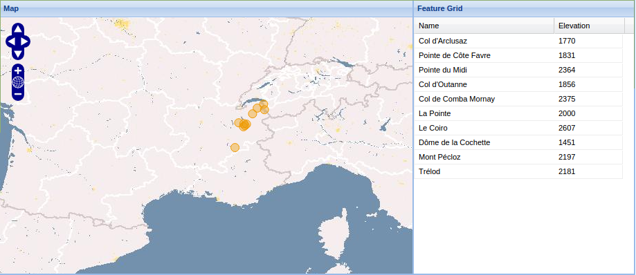
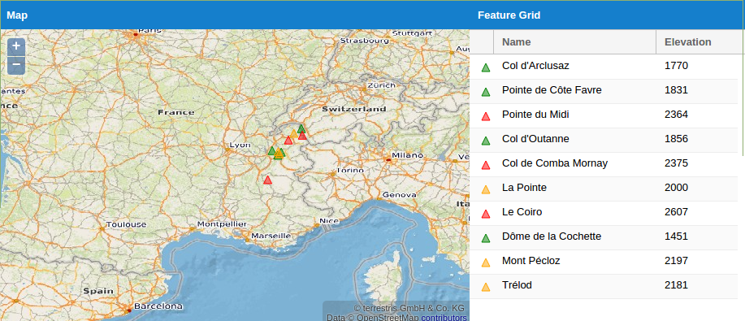
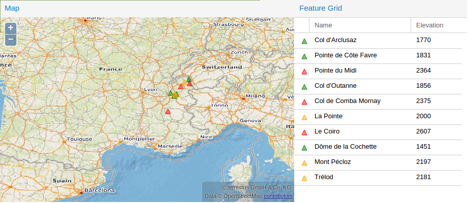

Towards GeoExt 3
Supporting both OpenLayers 3 and ExtJS 6
Marc Jansen & Christian Mayer
FOSS4G 2015, Seoul, South Korea, 2015-09-18
Outline
- Intro & Meta
- A short history of GeoExt
- GeoExt 3
- Objectives
- State
- Examples
- Major changes
- Outlook
Marc Jansen


- Since 2007 developer &, project leader @ terrestris
- Coredeveloper & member of PSC GeoExt
- Coredeveloper OpenLayers
- Author of a the German "OpenLayers" book
- OSGeo Foundation Charter Member
- ♥ OpenSource & GIS / Spatial
terrestris
- terrestris.de
- OpenSource GIS from Bonn, Germany
- Development, Projects & Support/Teaching
- Consulting, Planning, Implementation & Maintenance
Christian Mayer

- Software developer & architect
- Especially GIS / SDI
- Founder of meggsimum
- Coredeveloper & member of PSC GeoExt
- OSGeo Foundation Charter Member
- Speaker at nat. & intern. conferences
- ♥ OpenSource & GIS / Spatial
meggsimum
- meggsimum.de
- Based in Germany
- Services around GIS
- Webmapping Solutions
- Software Planning and Development
- Consulting and Trainings
GeoExt
- JavaScript framework for sophisticated WebGIS
- Based on OpenLayers and ExtJS
- Extends ExtJS by spatial components
- Rich webmapping interfaces
- © OSGeo
- First commit on Mar 25, 2009
GeoExt 1.x
- Based on
- ExtJS 3.x
- OpenLayers 2.x
- geoext.org 
GeoExt 2.0.x
- Based on
- ExtJS 4.x
- OpenLayers 2.x
- geoext.github.io/geoext2 
GeoExt 2.0.x
- Major improvements
- MVC support
- Advanced app theming
- Improved API-Docs
- Compatibility to Sencha's build tools
GeoExt 2.1.x
- Based on
- ExtJS 4.2.x or ExtJS 5.1.x
- OpenLayers 2.x
- Currently in beta stage
- geoext.github.io/geoext2 
GeoExt 2.1.x
- Major improvements
- MVVM support
- Two-way-binding
- Improved mobile / touch support
- Responsive design
In the meantime...
- OpenLayers 3
- ExtJS 6
were born
GeoExt 3 Codesprint
- Jun 17 - Jun 19, 2015 in Bonn
- 10 developers from 4 countries
- Built foundation for GeoExt 3
- OpenLayers 3
- ExtJS 6
Thanks!
Questions & Remarks?
Imprint
Authors
Marc Jansen
terrestris GmbH & Co. KG
Pützchens Chaussee 56
53227 Bonn
Germany
jansen@terrestris.de
terrestris GmbH & Co. KG
Pützchens Chaussee 56
53227 Bonn
Germany
jansen@terrestris.de
Christian Mayer
meggsimum.de
Hauptstraße 165a
67125 Dannstadt-Schauernheim
Germany
chris@meggsimum.de
meggsimum.de
Hauptstraße 165a
67125 Dannstadt-Schauernheim
Germany
chris@meggsimum.de
Licence
The slides of this talk are licensed under CC BY-SA